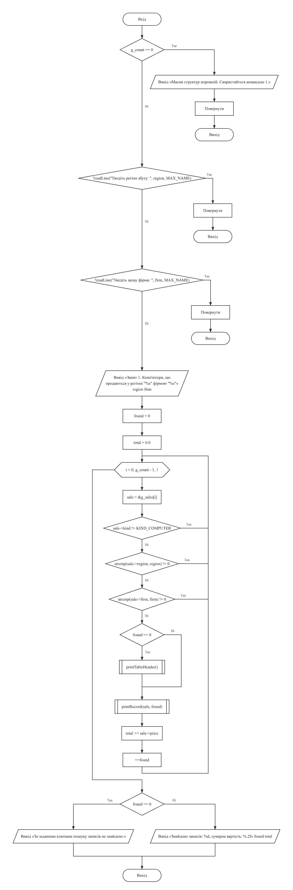
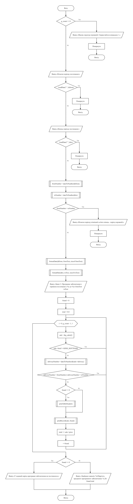
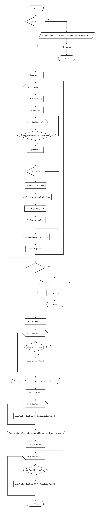
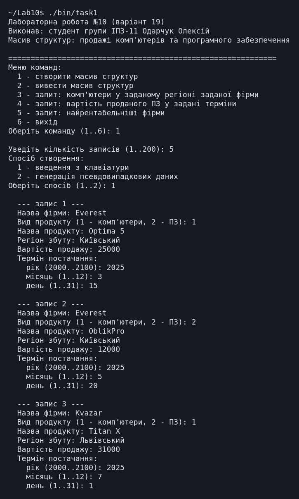
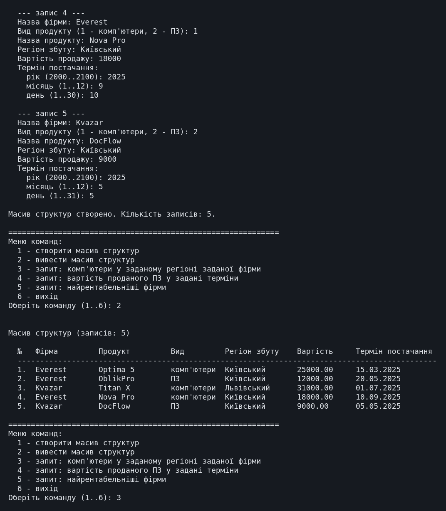
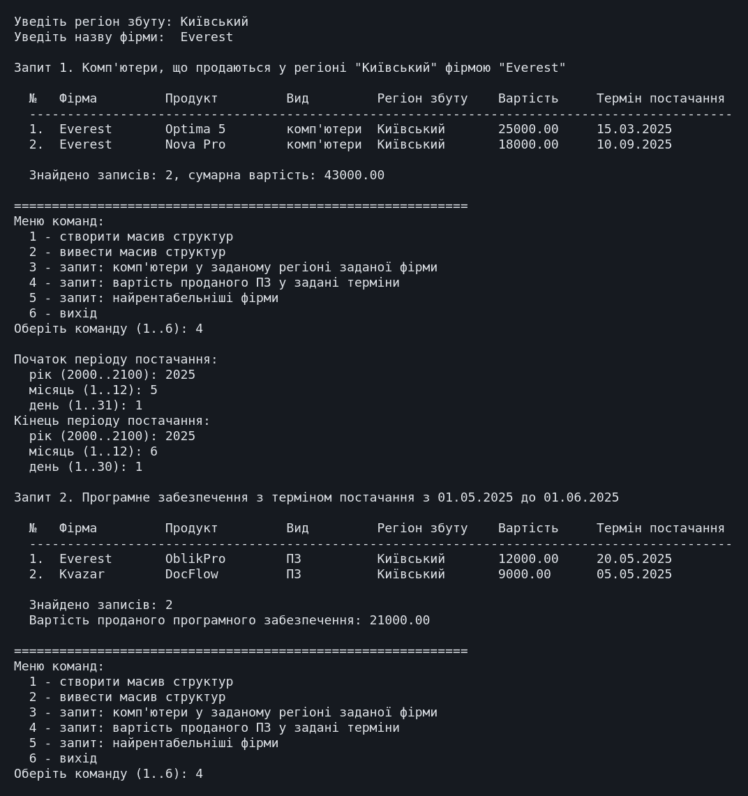
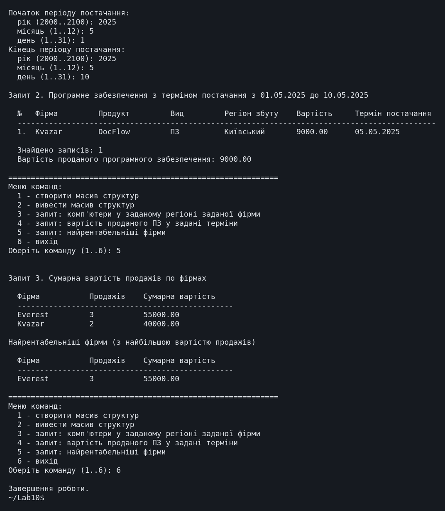

← До переліку лабораторних робіт
Лабораторна робота №10. Структури та масиви структур
Варіант 19. Виконав: Одарчук Олексій, КНУ імені Тараса Шевченка, ФІТ, група ІПЗ-11. C17, gcc
1. Мета роботи
- Ознайомитися зі структурним типом даних, оголошенням структурної змінної та масиву структур.
- Опанувати доступ до елементів структури та передачу структур у функції.
- Навчитися розробляти програми обробки масивів структур із реалізацією запитів.
2. Умова задачі
Створити масив структур. Кожна структура складається з таких елементів: назва фірми, продукт, що продається - комп'ютери і програмне забезпечення, регіон збуту, вартість продажу, термін постачання. Реалізувати запити, визначивши:
- список комп'ютерів, що продаються у заданому регіоні конкретною фірмою;
- вартість проданого програмного забезпечення у задані терміни;
- найрентабельніші фірми (з найбільшою вартістю продажів).
Результати запитів вивести у вигляді таблиць.
Обов'язкові вимоги до виконання
Невиконання пунктів 1-6 неприпустимо і призводить до штрафних санкцій у 50% зниження балів:
- меню команд, виконання яких здійснювати через виклики функцій;
- кожна функція визначає окрему обмежену дію відповідно до сценарію програми;
- застосування покажчиків на масив структур та окремі структури схвалюється;
- створення масиву через введення з клавіатури або генерацію псевдовипадкових даних;
- створений масив обов'язково вивести на екран у табличній формі із заголовком, що відповідає переліку полів з умови;
- пошук здійснювати, задаючи ключі пошуку з клавіатури;
- результати запитів виводити в табличній формі, заголовок таблиці виводиться один раз.
Обмеження умови: забороняється використовувати STL для колекцій - класи
vector, list, map, set,
string, ітератори, контейнери. Дозволено функції заголовних файлів
string.h, ctype.h, stdlib.h.
3. Аналіз задачі та теоретичне обґрунтування
Проєктування структури даних
Вид продукту подано переліковим типом ProductKind (комп'ютери або ПЗ),
а не рядком, тож запит "список комп'ютерів" не залежить від того, як користувач написав
назву. Назва моделі зберігається окремим полем product.
Термін постачання подано вкладеною структурою Date (день, місяць,
рік). Найбільший день, який можна ввести, залежить від місяця й року (функція
daysInMonth() враховує високосні роки), тож неіснуючу дату на кшталт 31.02
ввести неможливо. Для порівняння дату зведено до числа виду РРРРММДД:
dateToNumber(d) = d.year·10000 + d.month·100 + d.day
Порядок таких чисел збігається з хронологічним, тож дати порівнюються звичайними операціями відношення.
Виконання обов'язкових вимог
| Вимога | Реалізація |
|---|---|
| 1-2. Меню та поділ на функції |
Кожен пункт меню виконує окрема функція cmdCreate(),
cmdPrintAll(), cmdComputersByRegionAndFirm(),
cmdSoftwareValueByPeriod(), cmdMostProfitableFirms().
Головна функція лише відображає меню й викликає потрібну - жодної обробки даних у
ній немає.
|
| 3. Покажчики на структури |
Функції printRecord(), inputRecord(),
generateRecord(), dateToNumber() приймають структуру через
покажчик, а не копіюванням. У циклах запитів поточний запис адресується покажчиком
const Sale *const sale = &g_sales[i]: це уникає копіювання
структури, а модифікатор const документує, що запис не змінюється.
|
| 4. Два способи створення | Введення з клавіатури або генерація псевдовипадкових даних із наборів реалістичних назв фірм, регіонів, моделей комп'ютерів і назв програм. |
| 5. Таблична форма із заголовком |
Заголовок printTableHeader() повторює перелік полів з умови: Фірма,
Продукт, Вид, Регіон збуту, Вартість, Термін постачання.
|
| 6. Ключі пошуку з клавіатури | Регіон і назва фірми для запиту 1, межі періоду для запиту 2 вводяться користувачем. |
| 7. Заголовок один раз |
Заголовок таблиці результатів виводиться перед першим знайденим записом
(умова if (found == 0)), а не перед кожним. Якщо записів не знайдено,
таблиця не виводиться взагалі - натомість виводиться повідомлення.
|
Запит 3: найрентабельніші фірми
Записи групуються за назвою фірми, для кожної обчислюється сумарна вартість продажів, знаходиться найбільша сума, і виводяться усі фірми з цією сумою: за рівних сум їх може бути кілька.
Перед відповіддю виводиться таблиця сум по всіх фірмах, з якої видно, як отримано максимум.
Вирівнювання таблиць
Специфікатор %-16s рахує байти, а кирилична літера в UTF-8 займає два байти,
тому для вирівнювання таблиць використано функцію printPadded(), що рахує
ширину в символах.
Література: Ковалюк Т.В. Алгоритмізація та програмування. - Львів.: "Магнолія 2006", 2024. - 400 с.; Deitel P., Deitel H. C++ How to Program. Pearson Education, Inc. Hoboken, New Jersey. 2017. - 3015 p.
4. Блок-схема алгоритму



Схеми побудовано з текстів програм за допомогою rombik (rombik.app) відповідно до ДСТУ 19.701-90 (ISO 5807).
5. Текст програми
task1.c
/*==============================================================================
Лабораторна робота №10. Варіант 19.
Тема: структури та масиви структур.
Умова (варіант 19): створити масив структур. Кожна структура складається
з таких елементів: назва фірми, продукт, що продається - комп'ютери
і програмне забезпечення, регіон збуту, вартість продажу, термін постачання.
Реалізувати запити, визначивши:
- список комп'ютерів, що продаються у заданому регіоні конкретною фірмою;
- вартість проданого програмного забезпечення у задані терміни;
- найрентабельніші фірми (з найбільшою вартістю продажів).
Результати запитів вивести у вигляді таблиць.
ОБОВ'ЯЗКОВІ ВИМОГИ ДО ВИКОНАННЯ (невиконання пунктів 1-6 - штраф 50%):
1. Програма повинна мати меню команд, виконання яких здійснювати через
виклики функцій.
2. Кожна функція має визначати окрему обмежену дію відповідно до сценарію
програми: створення масиву структур, виведення масиву структур, пошук
і виведення результатів запитів.
3. Застосування покажчиків на масив структур та окремі структури
схвалюється.
4. Створення масиву структур здійснювати через введення з клавіатури або
генерацію рядків і чисел за допомогою генератора псевдовипадкових чисел.
5. Створений масив структур обов'язково вивести на екран у табличній формі.
Заголовок таблиці має відповідати заданому в умові переліку полів.
6. Виконання пошуку по масиву структур здійснювати, задаючи ключі пошуку
з клавіатури.
7. Виведення результатів запитів здійснювати в табличній формі. Заголовок
таблиці виводиться один раз, далі виводяться дані результату пошуку.
ОБМЕЖЕННЯ УМОВИ: забороняється використовувати STL для колекцій: класи
vector, list, map, set, string, ітератори, контейнери. Дозволено
використовувати функції заголовних файлів string.h, ctype.h, stdlib.h.
Виконав: Одарчук Олексій, КНУ імені Тараса Шевченка, ФІТ, група ІПЗ-11.
Компілятор: gcc -std=c17
==============================================================================*/
#include <stdio.h>
#include <stdbool.h>
#include <string.h>
#include <ctype.h>
#include <stdlib.h>
#include <time.h>
/* Обмеження на розміри даних. Межа масиву в мові C має бути сталим виразом
часу компіляції, а змінна з модифікатором const ним не є, тому розміри
задано директивами препроцесора. */
#define MAX_RECORDS 200 /* записів у масиві структур */
#define MAX_NAME 32 /* довжина текстового поля */
/* Межі року в терміні постачання. */
const int MIN_YEAR = 2000;
const int MAX_YEAR = 2100;
/* Ширини стовпців таблиці записів (у символах). */
enum
{
COL_NUMBER = 4,
COL_FIRM = 14,
COL_PRODUCT = 16,
COL_KIND = 12,
COL_REGION = 16,
COL_PRICE = 13,
COL_DATE = 18,
TABLE_WIDTH = COL_NUMBER + COL_FIRM + COL_PRODUCT + COL_KIND + COL_REGION +
COL_PRICE + COL_DATE
};
/* Ширини стовпців таблиці сум продажів по фірмах. */
enum
{
COL_FIRM_NAME = 16,
COL_FIRM_SALES = 12,
COL_FIRM_TOTAL = 20,
FIRM_TABLE_WIDTH = COL_FIRM_NAME + COL_FIRM_SALES + COL_FIRM_TOTAL
};
/*------------------------------------------------------------------------------
Вид продукту. Умова прямо називає два види: комп'ютери та програмне
забезпечення. Переліковий тип замість рядка робить порівняння надійним:
запит "список комп'ютерів" не залежатиме від того, як саме користувач
написав назву виду.
------------------------------------------------------------------------------*/
typedef enum
{
KIND_COMPUTER = 0, /* комп'ютери */
KIND_SOFTWARE = 1 /* програмне забезпечення */
} ProductKind;
/*------------------------------------------------------------------------------
Date - термін постачання. Окрема структура, вкладена в основну: це дозволяє
порівнювати терміни як єдине ціле, а не трьома окремими полями.
------------------------------------------------------------------------------*/
typedef struct
{
int day;
int month;
int year;
} Date;
/*------------------------------------------------------------------------------
Sale - запис про продаж. Поля відповідають переліку з умови варіанта:
firm - назва фірми;
kind - вид продукту (комп'ютери або програмне забезпечення);
product - назва конкретного продукту (моделі);
region - регіон збуту;
price - вартість продажу;
delivery - термін постачання.
------------------------------------------------------------------------------*/
typedef struct
{
char firm[MAX_NAME];
ProductKind kind;
char product[MAX_NAME];
char region[MAX_NAME];
double price;
Date delivery;
} Sale;
/* Масив структур та кількість заповнених записів. */
Sale g_sales[MAX_RECORDS];
int g_count = 0;
/*==============================================================================
Допоміжні функції
==============================================================================*/
/*------------------------------------------------------------------------------
utf8Width - ширина рядка в символах, а не в байтах.
Специфікатор формату виду %-18s рахує байти, а в кодуванні UTF-8 кирилична
літера займає два байти, тому таблиці з українськими даними "розповзаються".
Параметри: s [вхідний] - рядок.
Повертає : кількість символів рядка.
------------------------------------------------------------------------------*/
int utf8Width(const char *s)
{
int width = 0;
for (const unsigned char *p = (const unsigned char *)s; *p != '\0'; ++p)
{
/* Продовжувальний байт UTF-8 має вигляд 10xxxxxx: маска 0xC0 лишає
два старші біти, і якщо вони не дорівнюють 10, це початок символу. */
if ((*p & 0xC0) != 0x80)
{
++width;
}
}
return width;
}
/*------------------------------------------------------------------------------
printPadded - вивести рядок, доповнивши пропусками до заданої ширини
в символах.
Параметри:
s [вхідний] - рядок;
width [вхідний] - ширина поля в символах.
------------------------------------------------------------------------------*/
void printPadded(const char *s, int width)
{
printf("%s", s);
for (int i = utf8Width(s); i < width; ++i)
{
putchar(' ');
}
}
/*------------------------------------------------------------------------------
kindName - назва виду продукту.
Параметри: kind [вхідний] - вид продукту.
Повертає : рядок-константу з назвою.
------------------------------------------------------------------------------*/
const char *kindName(ProductKind kind)
{
return kind == KIND_COMPUTER ? "комп'ютери" : "ПЗ";
}
/*------------------------------------------------------------------------------
dateToNumber - звести дату до одного цілого числа виду РРРРММДД.
Таке подання дозволяє порівнювати дати звичайними операціями відношення:
хронологічний порядок дат збігається з числовим порядком цих чисел.
Параметри: d [вхідний] - покажчик на дату.
Повертає : число виду РРРРММДД.
------------------------------------------------------------------------------*/
long dateToNumber(const Date *d)
{
return (long)d->year * 10000 + d->month * 100 + d->day;
}
/*------------------------------------------------------------------------------
formatDate - записати дату до рядка у вигляді ДД.ММ.РРРР.
Параметри:
d [вхідний] - покажчик на дату;
buffer [вихідний] - буфер для рядка;
size [вхідний] - розмір буфера.
------------------------------------------------------------------------------*/
void formatDate(const Date *d, char *buffer, size_t size)
{
snprintf(buffer, size, "%02d.%02d.%d", d->day, d->month, d->year);
}
/*------------------------------------------------------------------------------
daysInMonth - кількість днів у місяці з урахуванням високосного року.
Параметри: month, year [вхідні] - місяць і рік.
Повертає : кількість днів у місяці.
------------------------------------------------------------------------------*/
int daysInMonth(int month, int year)
{
if (month == 2)
{
const bool isLeap = (year % 4 == 0 && year % 100 != 0) || year % 400 == 0;
return isLeap ? 29 : 28;
}
if (month == 4 || month == 6 || month == 9 || month == 11)
{
return 30;
}
return 31;
}
/*------------------------------------------------------------------------------
skipLine - відкинути залишок рядка введення разом із символом '\n'.
------------------------------------------------------------------------------*/
void skipLine(void)
{
int c = getchar();
while (c != '\n' && c != EOF)
{
c = getchar();
}
}
/*------------------------------------------------------------------------------
readInt - прочитати ціле число із заданого діапазону з контролем введення.
Параметри: prompt [вхідний], value [вихідний], low, high [вхідні].
Повертає : true - число прочитано; false - вхідні дані вичерпано.
------------------------------------------------------------------------------*/
bool readInt(const char *prompt, int *value, int low, int high)
{
for (;;)
{
printf("%s", prompt);
const int scanned = scanf("%d", value);
if (scanned == EOF)
{
return false;
}
skipLine();
if (scanned == 1 && *value >= low && *value <= high)
{
return true;
}
printf("Помилка: потрібне ціле число від %d до %d.\n", low, high);
}
}
/*------------------------------------------------------------------------------
readDouble - прочитати дійсне число з контролем введення.
Параметри: prompt [вхідний], value [вихідний], low [вхідний] - нижня межа.
Повертає : true - число прочитано; false - вхідні дані вичерпано.
------------------------------------------------------------------------------*/
bool readDouble(const char *prompt, double *value, double low)
{
for (;;)
{
printf("%s", prompt);
const int scanned = scanf("%lf", value);
if (scanned == EOF)
{
return false;
}
skipLine();
if (scanned == 1 && *value >= low)
{
return true;
}
printf("Помилка: потрібне дійсне число, не менше за %.2f.\n", low);
}
}
/*------------------------------------------------------------------------------
trimIncompleteUtf8 - відкинути неповний символ UTF-8 у кінці рядка.
Якщо рядок обрізано за розміром буфера, межа може пройти посередині
багатобайтового символу (кирилична літера займає два байти). Такий
залишок не є коректним символом, тому відкидається.
Параметри: s [вхідний/вихідний] - рядок.
Локальні змінні:
length - довжина рядка в байтах;
lead - індекс початкового байта останнього символу;
expected - кількість байтів, яку задає початковий байт.
------------------------------------------------------------------------------*/
void trimIncompleteUtf8(char *s)
{
const size_t length = strlen(s);
if (length == 0)
{
return;
}
/* Продовжувальні байти мають вигляд 10xxxxxx: пропускаємо їх до
початкового байта останнього символу. */
size_t lead = length - 1;
while (lead > 0 && ((unsigned char)s[lead] & 0xC0) == 0x80)
{
--lead;
}
/* Старші біти початкового байта задають довжину послідовності:
110xxxxx - 2 байти, 1110xxxx - 3, 11110xxx - 4. */
const unsigned char first = (unsigned char)s[lead];
size_t expected = 1;
if ((first & 0xE0) == 0xC0)
{
expected = 2;
}
else if ((first & 0xF0) == 0xE0)
{
expected = 3;
}
else if ((first & 0xF8) == 0xF0)
{
expected = 4;
}
if (length - lead < expected)
{
s[lead] = '\0';
}
}
/*------------------------------------------------------------------------------
trimSpaces - прибрати пропуски на початку й у кінці рядка, щоб випадковий
пропуск не заважав порівнянню назв під час пошуку.
Параметри: s [вхідний/вихідний] - рядок.
------------------------------------------------------------------------------*/
void trimSpaces(char *s)
{
size_t length = strlen(s);
while (length > 0 && isspace((unsigned char)s[length - 1]))
{
--length;
}
s[length] = '\0';
size_t start = 0;
while (isspace((unsigned char)s[start]))
{
++start;
}
memmove(s, s + start, length - start + 1);
}
/*------------------------------------------------------------------------------
readLine - прочитати текстовий рядок (назву) з клавіатури.
Пропуски на початку й у кінці рядка відкидаються.
Параметри:
prompt [вхідний] - текст запрошення;
buffer [вихідний] - буфер для рядка;
size [вхідний] - розмір буфера.
Повертає : true - рядок прочитано; false - вхідні дані вичерпано.
------------------------------------------------------------------------------*/
bool readLine(const char *prompt, char *buffer, int size)
{
printf("%s", prompt);
if (fgets(buffer, size, stdin) == NULL)
{
return false;
}
const size_t length = strlen(buffer);
if (length > 0 && buffer[length - 1] == '\n')
{
buffer[length - 1] = '\0';
}
else if (!feof(stdin))
{
/* Буфер заповнено до кінця. Якщо далі не кінець рядка, рядок
задовгий: зайві символи відкидаються. */
const int c = getchar();
if (c != '\n' && c != EOF)
{
skipLine();
trimIncompleteUtf8(buffer);
printf("Увага: рядок задовгий, збережено лише його початок: %s\n", buffer);
}
}
trimSpaces(buffer);
return true;
}
/*------------------------------------------------------------------------------
readDate - прочитати дату: рік, місяць і день.
Найбільший припустимий день залежить від місяця й року, тому неіснуючу
дату (наприклад, 31.02) ввести неможливо.
Параметри:
indent [вхідний] - відступ перед запрошеннями;
date [вихідний] - покажчик на дату.
Повертає : true - дату прочитано; false - вхідні дані вичерпано.
------------------------------------------------------------------------------*/
bool readDate(const char *indent, Date *date)
{
char prompt[64];
snprintf(prompt, sizeof prompt, "%sрік (%d..%d): ", indent, MIN_YEAR, MAX_YEAR);
if (!readInt(prompt, &date->year, MIN_YEAR, MAX_YEAR))
{
return false;
}
snprintf(prompt, sizeof prompt, "%sмісяць (1..12): ", indent);
if (!readInt(prompt, &date->month, 1, 12))
{
return false;
}
const int lastDay = daysInMonth(date->month, date->year);
snprintf(prompt, sizeof prompt, "%sдень (1..%d): ", indent, lastDay);
return readInt(prompt, &date->day, 1, lastDay);
}
/*==============================================================================
Створення та виведення масиву структур
==============================================================================*/
/* Набори назв для генерації псевдовипадкових записів. */
const char *FIRMS[] = {"Everest", "Kvazar", "Sokil", "Dnipro-IT", "Karpaty"};
const char *REGIONS[] = {"Київський", "Львівський", "Одеський", "Харківський",
"Дніпровський"};
const char *COMPUTERS[] = {"Optima 5", "Nova Pro", "Titan X", "Bureau 300"};
const char *SOFTWARE[] = {"OblikPro", "SklavSoft", "DocFlow", "AntiVirus U"};
const int FIRMS_COUNT = (int)(sizeof FIRMS / sizeof FIRMS[0]);
const int REGIONS_COUNT = (int)(sizeof REGIONS / sizeof REGIONS[0]);
const int COMPUTERS_COUNT = (int)(sizeof COMPUTERS / sizeof COMPUTERS[0]);
const int SOFTWARE_COUNT = (int)(sizeof SOFTWARE / sizeof SOFTWARE[0]);
/*------------------------------------------------------------------------------
generateRecord - заповнити один запис псевдовипадковими даними.
Параметри: sale [вихідний] - покажчик на структуру, що заповнюється.
------------------------------------------------------------------------------*/
void generateRecord(Sale *sale)
{
strcpy(sale->firm, FIRMS[rand() % FIRMS_COUNT]);
strcpy(sale->region, REGIONS[rand() % REGIONS_COUNT]);
sale->kind = (rand() % 2 == 0) ? KIND_COMPUTER : KIND_SOFTWARE;
if (sale->kind == KIND_COMPUTER)
{
strcpy(sale->product, COMPUTERS[rand() % COMPUTERS_COUNT]);
}
else
{
strcpy(sale->product, SOFTWARE[rand() % SOFTWARE_COUNT]);
}
/* Вартість від 1000,00 до 9999,99 з копійками. */
sale->price = 1000.0 + (rand() % 9000) + (rand() % 100) / 100.0;
sale->delivery.year = 2025;
sale->delivery.month = 1 + rand() % 12;
sale->delivery.day = 1 + rand() % daysInMonth(sale->delivery.month, 2025);
}
/*------------------------------------------------------------------------------
inputRecord - заповнити один запис даними з клавіатури.
Параметри:
sale [вихідний] - покажчик на структуру;
index [вхідний] - номер запису (для запрошень).
Повертає : true - запис заповнено; false - вхідні дані вичерпано.
------------------------------------------------------------------------------*/
bool inputRecord(Sale *sale, int index)
{
printf("\n --- запис %d ---\n", index + 1);
if (!readLine(" Назва фірми: ", sale->firm, MAX_NAME))
{
return false;
}
int kind = 0;
if (!readInt(" Вид продукту (1 - комп'ютери, 2 - ПЗ): ", &kind, 1, 2))
{
return false;
}
sale->kind = (kind == 1) ? KIND_COMPUTER : KIND_SOFTWARE;
if (!readLine(" Назва продукту: ", sale->product, MAX_NAME))
{
return false;
}
if (!readLine(" Регіон збуту: ", sale->region, MAX_NAME))
{
return false;
}
if (!readDouble(" Вартість продажу: ", &sale->price, 0.0))
{
return false;
}
printf(" Термін постачання:\n");
return readDate(" ", &sale->delivery);
}
/*------------------------------------------------------------------------------
printTableHeader - вивести заголовок таблиці записів.
Заголовок відповідає переліку полів, заданому в умові варіанта, і виводиться
РІВНО ОДИН РАЗ перед даними - як вимагає пункт 7 умови.
------------------------------------------------------------------------------*/
void printTableHeader(void)
{
printf(" ");
printPadded("№", COL_NUMBER);
printPadded("Фірма", COL_FIRM);
printPadded("Продукт", COL_PRODUCT);
printPadded("Вид", COL_KIND);
printPadded("Регіон збуту", COL_REGION);
printPadded("Вартість", COL_PRICE);
printPadded("Термін постачання", COL_DATE);
printf("\n ");
for (int i = 0; i < TABLE_WIDTH; ++i)
{
putchar('-');
}
printf("\n");
}
/*------------------------------------------------------------------------------
printRecord - вивести один запис рядком таблиці.
Параметри:
sale [вхідний] - покажчик на структуру;
index [вхідний] - порядковий номер рядка.
------------------------------------------------------------------------------*/
void printRecord(const Sale *sale, int index)
{
char buffer[MAX_NAME];
printf(" ");
snprintf(buffer, sizeof buffer, "%d.", index + 1);
printPadded(buffer, COL_NUMBER);
printPadded(sale->firm, COL_FIRM);
printPadded(sale->product, COL_PRODUCT);
printPadded(kindName(sale->kind), COL_KIND);
printPadded(sale->region, COL_REGION);
snprintf(buffer, sizeof buffer, "%.2f", sale->price);
printPadded(buffer, COL_PRICE);
formatDate(&sale->delivery, buffer, sizeof buffer);
printPadded(buffer, COL_DATE);
printf("\n");
}
/*------------------------------------------------------------------------------
cmdCreate - команда меню: створити масив структур.
------------------------------------------------------------------------------*/
void cmdCreate(void)
{
char prompt[64];
int n = 0;
snprintf(prompt, sizeof prompt, "Уведіть кількість записів (1..%d): ", MAX_RECORDS);
if (!readInt(prompt, &n, 1, MAX_RECORDS))
{
return;
}
printf("Спосіб створення:\n"
" 1 - введення з клавіатури\n"
" 2 - генерація псевдовипадкових даних\n");
int choice = 0;
if (!readInt("Оберіть спосіб (1..2): ", &choice, 1, 2))
{
return;
}
if (choice == 1)
{
for (int i = 0; i < n; ++i)
{
if (!inputRecord(&g_sales[i], i))
{
return;
}
}
}
else
{
for (int i = 0; i < n; ++i)
{
generateRecord(&g_sales[i]);
}
}
g_count = n;
printf("\nМасив структур створено. Кількість записів: %d.\n", g_count);
}
/*------------------------------------------------------------------------------
cmdPrintAll - команда меню: вивести весь масив структур у табличній формі.
------------------------------------------------------------------------------*/
void cmdPrintAll(void)
{
if (g_count == 0)
{
printf("Масив структур порожній. Скористайтеся командою 1.\n");
return;
}
printf("\nМасив структур (записів: %d)\n\n", g_count);
printTableHeader();
for (int i = 0; i < g_count; ++i)
{
printRecord(&g_sales[i], i);
}
}
/*==============================================================================
Запити
==============================================================================*/
/*------------------------------------------------------------------------------
cmdComputersByRegionAndFirm - запит 1: список комп'ютерів, що продаються
у заданому регіоні конкретною фірмою.
Ключі пошуку (регіон і назва фірми) вводяться з клавіатури, як вимагає
пункт 6 умови.
------------------------------------------------------------------------------*/
void cmdComputersByRegionAndFirm(void)
{
if (g_count == 0)
{
printf("Масив структур порожній. Скористайтеся командою 1.\n");
return;
}
char region[MAX_NAME];
char firm[MAX_NAME];
if (!readLine("Уведіть регіон збуту: ", region, MAX_NAME))
{
return;
}
if (!readLine("Уведіть назву фірми: ", firm, MAX_NAME))
{
return;
}
printf("\nЗапит 1. Комп'ютери, що продаються у регіоні \"%s\" фірмою \"%s\"\n\n",
region, firm);
int found = 0;
double total = 0.0;
for (int i = 0; i < g_count; ++i)
{
const Sale *const sale = &g_sales[i]; /* поточний запис */
if (sale->kind != KIND_COMPUTER)
{
continue;
}
if (strcmp(sale->region, region) != 0)
{
continue;
}
if (strcmp(sale->firm, firm) != 0)
{
continue;
}
/* Заголовок таблиці виводиться один раз - перед першим знайденим
записом, а не перед кожним. */
if (found == 0)
{
printTableHeader();
}
printRecord(sale, found);
total += sale->price;
++found;
}
if (found == 0)
{
printf(" За заданими ключами пошуку записів не знайдено.\n");
}
else
{
printf("\n Знайдено записів: %d, сумарна вартість: %.2f\n", found, total);
}
}
/*------------------------------------------------------------------------------
cmdSoftwareValueByPeriod - запит 2: вартість проданого програмного
забезпечення у задані терміни.
Терміни задаються двома датами - початком і кінцем періоду; обидві межі
входять до періоду.
------------------------------------------------------------------------------*/
void cmdSoftwareValueByPeriod(void)
{
if (g_count == 0)
{
printf("Масив структур порожній. Скористайтеся командою 1.\n");
return;
}
Date from;
Date to;
printf("Початок періоду постачання:\n");
if (!readDate(" ", &from))
{
return;
}
printf("Кінець періоду постачання:\n");
if (!readDate(" ", &to))
{
return;
}
const long fromNumber = dateToNumber(&from);
const long toNumber = dateToNumber(&to);
if (fromNumber > toNumber)
{
printf("\nПочаток періоду пізніший за його кінець - період порожній.\n");
return;
}
char fromText[16];
char toText[16];
formatDate(&from, fromText, sizeof fromText);
formatDate(&to, toText, sizeof toText);
printf("\nЗапит 2. Програмне забезпечення з терміном постачання з %s до %s\n\n",
fromText, toText);
int found = 0;
double total = 0.0;
for (int i = 0; i < g_count; ++i)
{
const Sale *const sale = &g_sales[i]; /* поточний запис */
if (sale->kind != KIND_SOFTWARE)
{
continue;
}
const long deliveryNumber = dateToNumber(&sale->delivery);
if (deliveryNumber < fromNumber || deliveryNumber > toNumber)
{
continue;
}
if (found == 0)
{
printTableHeader();
}
printRecord(sale, found);
total += sale->price;
++found;
}
if (found == 0)
{
printf(" У заданий період програмне забезпечення не постачалося.\n");
}
else
{
printf("\n Знайдено записів: %d\n"
" Вартість проданого програмного забезпечення: %.2f\n",
found, total);
}
}
/*------------------------------------------------------------------------------
printFirmHeader - вивести заголовок таблиці сум продажів по фірмах.
------------------------------------------------------------------------------*/
void printFirmHeader(void)
{
printf(" ");
printPadded("Фірма", COL_FIRM_NAME);
printPadded("Продажів", COL_FIRM_SALES);
printPadded("Сумарна вартість", COL_FIRM_TOTAL);
printf("\n ");
for (int i = 0; i < FIRM_TABLE_WIDTH; ++i)
{
putchar('-');
}
printf("\n");
}
/*------------------------------------------------------------------------------
printFirmRow - вивести рядок таблиці сум продажів по фірмах.
Параметри:
name [вхідний] - назва фірми;
sales [вхідний] - кількість продажів;
total [вхідний] - сумарна вартість продажів.
------------------------------------------------------------------------------*/
void printFirmRow(const char *name, int sales, double total)
{
char buffer[MAX_NAME];
printf(" ");
printPadded(name, COL_FIRM_NAME);
snprintf(buffer, sizeof buffer, "%d", sales);
printPadded(buffer, COL_FIRM_SALES);
snprintf(buffer, sizeof buffer, "%.2f", total);
printPadded(buffer, COL_FIRM_TOTAL);
printf("\n");
}
/*------------------------------------------------------------------------------
cmdMostProfitableFirms - запит 3: найрентабельніші фірми (з найбільшою
вартістю продажів).
Обчислюється сумарна вартість продажів кожної фірми, після чого знаходиться
найбільша сума. Виводяться всі фірми з цією сумою: найбільших значень може
бути кілька, і мовчки показати лише одну було б неправильно.
Локальні змінні:
firmNames - назви фірм, знайдені в масиві структур;
firmTotal - сумарна вартість продажів кожної фірми;
firmCount - кількість різних фірм;
maxTotal - найбільша сумарна вартість.
------------------------------------------------------------------------------*/
void cmdMostProfitableFirms(void)
{
if (g_count == 0)
{
printf("Масив структур порожній. Скористайтеся командою 1.\n");
return;
}
char firmNames[MAX_RECORDS][MAX_NAME];
double firmTotal[MAX_RECORDS];
int firmSales[MAX_RECORDS];
int firmCount = 0;
/* Групування записів за назвою фірми. */
for (int i = 0; i < g_count; ++i)
{
const Sale *const sale = &g_sales[i]; /* поточний запис */
int position = -1;
for (int j = 0; j < firmCount; ++j)
{
if (strcmp(firmNames[j], sale->firm) == 0)
{
position = j;
break;
}
}
if (position < 0)
{
position = firmCount++;
strcpy(firmNames[position], sale->firm);
firmTotal[position] = 0.0;
firmSales[position] = 0;
}
firmTotal[position] += sale->price;
++firmSales[position];
}
/* Захист звертання до firmTotal[0]: без жодної фірми елемент був би
неініціалізованим. */
if (firmCount == 0)
{
printf("Даних для запиту немає.\n");
return;
}
/* Пошук найбільшої сумарної вартості. */
double maxTotal = firmTotal[0];
for (int j = 1; j < firmCount; ++j)
{
if (firmTotal[j] > maxTotal)
{
maxTotal = firmTotal[j];
}
}
printf("\nЗапит 3. Сумарна вартість продажів по фірмах\n\n");
printFirmHeader();
for (int j = 0; j < firmCount; ++j)
{
printFirmRow(firmNames[j], firmSales[j], firmTotal[j]);
}
printf("\nНайрентабельніші фірми (з найбільшою вартістю продажів)\n\n");
printFirmHeader();
for (int j = 0; j < firmCount; ++j)
{
if (firmTotal[j] == maxTotal)
{
printFirmRow(firmNames[j], firmSales[j], firmTotal[j]);
}
}
}
/*------------------------------------------------------------------------------
Головна функція. Відображає меню та викликає відповідні функції.
Локальні змінні:
choice - номер обраного пункту меню.
------------------------------------------------------------------------------*/
int main(void)
{
printf("Лабораторна робота №10 (варіант 19)\n");
printf("Виконав: студент групи ІПЗ-11 Одарчук Олексій\n");
printf("Масив структур: продажі комп'ютерів та програмного забезпечення\n");
/* Генератор псевдовипадкових чисел ініціалізується один раз на весь
сеанс роботи програми. */
srand((unsigned)time(NULL));
for (;;)
{
printf("\n============================================================\n");
printf("Меню команд:\n");
printf(" 1 - створити масив структур\n");
printf(" 2 - вивести масив структур\n");
printf(" 3 - запит: комп'ютери у заданому регіоні заданої фірми\n");
printf(" 4 - запит: вартість проданого ПЗ у задані терміни\n");
printf(" 5 - запит: найрентабельніші фірми\n");
printf(" 6 - вихід\n");
int choice = 0;
if (!readInt("Оберіть команду (1..6): ", &choice, 1, 6))
{
printf("\nВхідні дані вичерпано. Завершення роботи.\n");
break;
}
printf("\n");
if (choice == 1)
{
cmdCreate();
}
else if (choice == 2)
{
cmdPrintAll();
}
else if (choice == 3)
{
cmdComputersByRegionAndFirm();
}
else if (choice == 4)
{
cmdSoftwareValueByPeriod();
}
else if (choice == 5)
{
cmdMostProfitableFirms();
}
else
{
printf("Завершення роботи.\n");
break;
}
}
return 0;
}
6. Результати виконання роботи
Компіляція: make (gcc -std=c17, прапорці
-Wall -Wextra -pedantic -O2). Попереджень компілятора немає.
Нижче наведено екранні копії повних прогонів програм: кожна починається з запуску програми, містить усе введення з клавіатури й увесь вивід до завершення роботи. Прогін, що не вміщується на один екран, подано кількома послідовними частинами. Протоколи всіх прогонів, зокрема додаткових наборів вхідних даних, винесено окремими файлами за посиланнями.




Повний протокол виконання (task1.txt) (повний протокол, 524 рядків)
7. Аналіз достовірності результатів
Достовірність результатів перевірено ручним відбором записів і розрахунком сум за таблицею вхідних даних. Для кожної контрольної величини поруч із розрахунком наведено результат програми.
Контрольний набір даних
Дані підібрано так, щоб відповідь на кожен запит можна було перевірити вручну.
| № | Фірма | Продукт | Вид | Регіон | Вартість | Термін |
|---|---|---|---|---|---|---|
| 1 | Everest | Optima 5 | комп'ютери | Київський | 25000,00 | 15.03.2025 |
| 2 | Everest | OblikPro | ПЗ | Київський | 12000,00 | 20.05.2025 |
| 3 | Kvazar | Titan X | комп'ютери | Львівський | 31000,00 | 01.07.2025 |
| 4 | Everest | Nova Pro | комп'ютери | Київський | 18000,00 | 10.09.2025 |
| 5 | Kvazar | DocFlow | ПЗ | Київський | 9000,00 | 05.05.2025 |
Запит 1: комп'ютери в Київському регіоні фірми Everest
Ручний відбір: запис 1 (комп'ютери, Київський, Everest) - підходить; запис 2 - ПЗ, не підходить; запис 3 - інша фірма й регіон; запис 4 - підходить; запис 5 - ПЗ. Отже 2 записи, сумарна вартість 25000 + 18000 = 43000.
Результат програми: 2 записи (Optima 5 і Nova Pro), сумарна вартість 43000,00.
Запит 2: вартість ПЗ з терміном постачання 01.05.2025 - 01.06.2025
Ручний відбір серед записів виду "ПЗ": запис 2 (20.05.2025) - потрапляє в період; запис 5 (05.05.2025) - потрапляє. Комп'ютери не враховуються. Отже 2 записи, вартість 12000 + 9000 = 21000.
Результат програми: 21000,00.
Щоб перевірити фільтр за датою, запит повторено для періоду 01.05.2025 - 10.05.2025: має лишитися тільки запис 5 (9000). Програма вивела один запис (DocFlow) і вартість 9000,00.
Запит 3: найрентабельніші фірми
| Фірма | Ручний розрахунок | Результат програми |
|---|---|---|
| Everest | 25000 + 12000 + 18000 = 55000 за 3 продажі | 55000,00, продажів: 3 |
| Kvazar | 31000 + 9000 = 40000 за 2 продажі | 40000,00, продажів: 2 |
| Найрентабельніша | Everest (55000 > 40000) | Everest, 55000,00 |
Перевірка випадку однакових сум
Окремий набір даних перевіряє рівні суми: Alpha (10000 + 5000 = 15000) і Beta (9000 + 6000 = 15000). Програма вивела обидві фірми як найрентабельніші.
Перевірка порожніх результатів
Запит за неіснуючим регіоном ("Полтавський") дає повідомлення "За заданими ключами пошуку записів не знайдено" без порожньої таблиці. Окремо перевірено запити до порожнього масиву структур і період, у якому початок пізніший за кінець: програма повідомляє про це.
8. Висновки
-
Створено масив структур із вкладеною структурою
Dateі переліковим типом виду продукту; масив створюється з клавіатури або генерацією і виводиться таблицею. - Реалізовано три запити з ключами пошуку, що вводяться з клавіатури; результати виводяться таблицями, заголовок - один раз.
- Дати порівнюються через зведення до числа РРРРММДД; у запиті 3 виводяться всі фірми з максимальною сумою.
-
Дотримано обов'язкових вимог і обмежень умови: команди меню виконуються викликами
функцій, STL-колекції та клас
stringне використовуються. - Завдання варіанта виконано в повному обсязі.